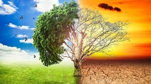
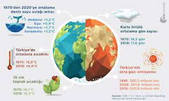
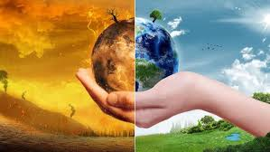
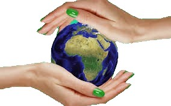
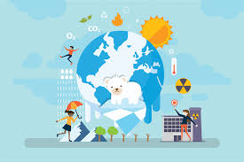

İklim Değişikliği Hakkında :





İklim Değişikliği Nedir ?
İklim değişikliği, dünya genelinde iklim koşullarında meydana gelen uzun vadeli değişiklikleri ifade eder. Bu değişiklikler genellikle ortalama sıcaklık, yağış miktarı, rüzgar desenleri ve diğer iklim faktörleri üzerindeki uzun vadeli etkileri içerir.
Sebepleri :
1- Fosil Yakıt Kullanımı:
Kömür, petrol ve doğal gaz gibi fosil yakıtların kullanımı, atmosfere büyük miktarda sera gazı salınımına neden olur. Bu sera gazları, güneş ışınlarını yakalar ve atmosferde sıcaklığı artırır.
2- Ormansızlaşma :
Orman alanlarının azalması, karbon emme kapasitesini azaltır. Ormanlar genellikle atmosferdeki karbonu emer ve oksijen üretir, bu nedenle ormansızlaşma iklim değişikliğini hızlandırabilir.
3- Endüstriyel Faaliyetler :
Sanayileşme süreci sırasında, enerji üretimi, ulaşım ve diğer endüstriyel faaliyetler, sera gazlarının atmosfere salınımına neden olabilir.
4- Tarım Uygulamaları :
Tarım, metan ve diğer sera gazlarının salınımına katkıda bulunabilir. Ayrıca, ormansızlaşma nedeniyle tarım alanlarının genişlemesi iklim üzerinde etkili olabilir.
Etkileri :
1- Deniz Seviyesi Yükselmesi :
Kutuplardaki buzulların erimesi ve deniz suyunun genleşmesi nedeniyle deniz seviyeleri yükselmektedir.
2- Ekstrem Hava Olayları :
Sıcaklık artışı, şiddetli fırtınalar, sel ve kuraklık gibi ekstrem hava olaylarını tetikleyebilir.
3- Biyolojik Çeşitlilik Kaybı :
İklim değişikliği, bazı ekosistemleri bozabilir ve birçok türün habitatlarını değiştirebilir, bu da biyolojik çeşitliliği olumsuz etkileyebilir.
4- Tarım ve Gıda Güvenliği Sorunları :
İklim değişikliği, tarım alanlarını ve su kaynaklarını etkileyerek gıda üretimini olumsuz etkileyebilir.
Çözümleri :
1- Temiz Enerji Kullanımı :
Fosil yakıtlara dayalı enerji kaynaklarından temiz enerji kaynaklarına geçiş, sera gazı salınımını azaltabilir.
2- Ormancılık ve Ağaçlandırma:
Ormanları korumak ve yeni ağaçlandırma projeleri başlatmak, karbon emilimini artırabilir.
3- Sürdürülebilir Ulaşım :
Daha az sera gazı üreten ulaşım modlarına (elektrikli araçlar, toplu taşıma) geçiş, karbon ayak izini azaltabilir.
4- Sürdürülebilir Tarım Uygulamaları :
Gıda üretiminde sürdürülebilir ve çevre dostu tarım uygulamalarına geçiş, iklim değişikliğinin tarıma etkisini azaltabilir.
Not :
Bu çözümler, bireyler, topluluklar, kurumlar ve hükümetler düzeyinde alınabilir. İklim değişikliğiyle mücadele, geniş kapsamlı ve küresel bir çaba gerektirir.